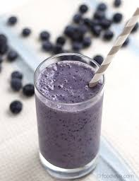

Blueberry shake

Description
If you do not have a high-powered blender, blend the Almond Breeze Unsweetened Vanilla Almondmilk and half of the frozen fruit first, then slowing add the rest of the fruit and remaining ingredients.
Ingredients
- Almondmilk
- Frozen blueberries
- 2-3 ice cubes
- Pure vanilla extract
- 1 tablespoon almond butter
- 2 medium sized bananas,cut into chunks
Steps
- Combine banana, blueberries, dates, almond butter, vanilla extract, and Almond Breeze Unsweetened Vanilla Almondmilk in a high powered blender. Blend until smooth.
-